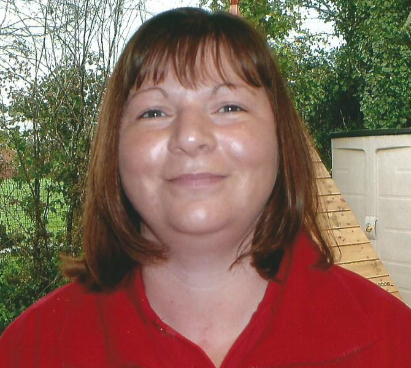

"The contribution of the early years provision to the well-being of children is outstanding"
Ofsted Report 05/2015
Open Monday to Friday
8.50 am / 9.20 am to 11.50 am / 12.20 pm 12.30 pm / 1.00 pm to 3.30 pm / 4.00 pm (3 hourly sessions)
Telephone Number (Term time only):
01794 512396
Our Staff
All our staff are checked by the Disclosure and Barring Service for any criminal activity, registered with Ofsted, and have a First Aid certificate. We are continually updating our knowledge and understanding of Early Years care and development with courses and workshops on subjects such as Child Protection, Food Hygiene and Safety, Attachment, Special Education Needs, Speech and Language and all areas of the curriculum.
| Jane Vamplew | Leader | Early Years Care and Education NVQ 3 | |
| Julie Clark | Leader | Diploma for the Children and Young People's Workforce L3 | |
| Sue Michalas | Deputy | Diploma in Pre-school Practice | |
| Vicky Wooldridge | Deputy | Diploma for the Children and Young People's Workforce L3 |  |
| Jane Race | Assistant | Early Years Care and Education NVQ 3 |  |
| Natasha Feltham | Assistant | Diploma for the Children and Young People's Workforce L3 |  |
| Paula Aitkin | Assistant | Diploma for Early Years Practitioner L3 | |
| Stacey Sherman | Assistant | Diploma for Early Years Educator L3 | |
| Jemma Case | Assistant | BA in Primary Education (Qualified Teacher Status) | |
| Charlene Hemmings | Assistant | Diploma for Early Years Educator L3 |